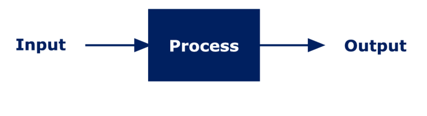

Als je een computer een opdracht wilt laten doen, dan gaat dat via het principe van gegevens worden gegeven aan de cumputer (invoer), de computer gebruikt de gegevens (verwerking) en het resultaat van de computer wordt getoond (uitvoer).
De invoer zijn alle gegevens die je aan de computer door geeft en waar dan de computer volgens jou iets mee moet doen. Bijvoorbeeld als je je muis naar een bepaalde plek toe stuurt of als je op een link ergens drukt.
Nadat de computer de gegevens heeft binnengekregen gaat de computer aan de slag om de gegevens te verwerken. Dit wordt gedaan in de CPU (central procesing unit) oftewel het brein van de computer.
En als de computer klaar is met verwerking krijg je mooi het resultaat te zien. Dit kan bijvoorbeeld een tablad zijn die je opent of een nieuwe pagina.
